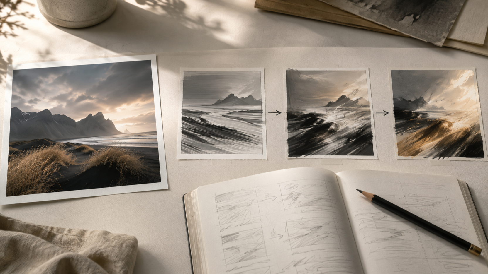
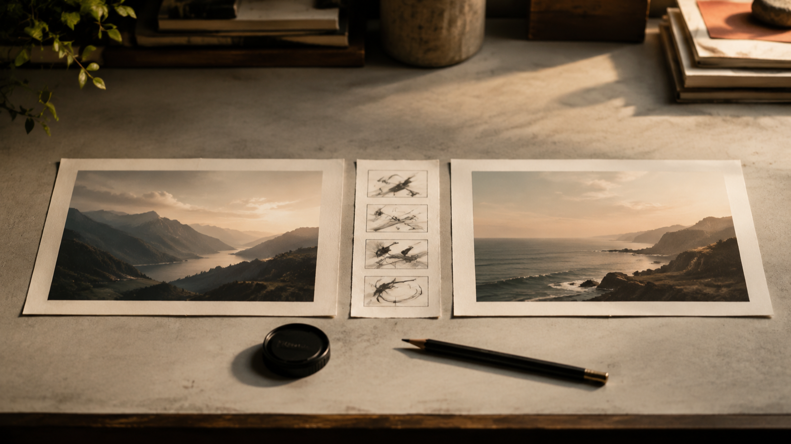

Промпты MiniMax H3 для изображения в видео: как спланировать один управляемый кадр
Раскрытие: я — основатель FLAQ. В этой статье рассказывается о сервисе FLAQ MiniMax H3 для преобразования изображения в видео и о ресурсах с промптами; независимое тестирование результатов здесь не приводится.
Промпты MiniMax H3 полезнее воспринимать не как набор прилагательных, а как короткий бриф для одной сцены. Если исходный визуал уже выбран, задача — ясно описать, что в кадре начинает двигаться, куда ведёт камера и какое состояние должно завершить действие. Так идея остаётся проверяемой ещё до работы с материалом.
На текущей странице FLAQ MiniMax H3 Image-to-Video этот сценарий описан как преобразование изображения в видео: нужен начальный кадр, а конечный кадр можно добавить для более направленного перехода. Там же показано текстовое поле промпта и диапазон длительности 5–15 секунд. Это описание интерфейса FLAQ, а не отчёт о независимой проверке.

План перехода: исходный визуал, последовательность движения и заметки для брифа.
Что здесь означает «промпты MiniMax H3»
Для практической задачи промпт отвечает на один вопрос: какую наблюдаемую перемену должен описывать кадр. Вместо «сделай кинематографично» полезнее назвать исходное состояние, одно действие, движение камеры и ограничение непрерывности. Например, для пейзажа это может быть не «драматичный ролик», а «камера медленно отъезжает от берега; трава колышется ветром; линия горизонта и силуэт гор остаются теми же».
Такое описание не обещает конкретный результат. Оно лишь делает намерение яснее: что должно оставаться опорой, что меняется и по каким признакам можно заметить, что бриф слишком расплывчат.
Как спланировать промпты MiniMax H3 для преобразования изображения в видео
Начните с начального кадра. Отметьте в нём один или два элемента, которые нельзя потерять: силуэт предмета, расположение человека, направление света, геометрию комнаты или линию горизонта. Не пытайтесь одновременно закрепить всё изображение и придумать десяток событий: это превращает бриф в перечень несвязанных требований.
Затем задайте одну главную перемену. Она может относиться к объекту, окружению или камере, но должна читаться во времени. Полезная формула выглядит так:
- Опора: что уже видно в начальном кадре.
- Действие: что именно начинает происходить.
- Камера: статична ли она, приближается, отъезжает или следует за объектом.
- Непрерывность: какие детали нельзя менять по ходу сцены.
- Завершение: какое состояние нужно увидеть в конце; если оно существенно, продумайте конечный кадр как отдельную визуальную опору.

Бриф кадра: визуальная опора, путь движения и вариант конечного состояния.
Конечный кадр не стоит добавлять автоматически. Он нужен, когда важен конкретный переход между двумя визуальными состояниями. Если же задача — развить один уже утверждённый визуал, достаточно сначала сформулировать движение и ограничения вокруг начального кадра. В обоих случаях лучше оставить в брифе только те детали, которые можно увидеть и проверить глазами.
Какие элементы держать в одном брифе
Хороший бриф можно прочитать как последовательность, а не как россыпь тегов. Попробуйте разделить его на четыре короткие строки:
- Сцена: место, время суток и исходная композиция.
- Главное действие: один объект или персонаж и одно заметное изменение.
- Камера и ритм: направление движения камеры и темп без противоречивых команд.
- Ограничения: предметы, форма, расположение или настроение, которые должны сохраняться.
Например, для предметной сцены сначала укажите сам предмет и его положение в референсе. Затем назовите действие — поворот, открывание, появление света, движение ткани. После этого добавьте камеру. В конце перечислите только самые важные запреты: не менять форму предмета, не добавлять текст, не переносить сцену в другое место. Это не универсальная формула качества, а способ убрать противоречия из собственного задания.
Что отделить от возможностей эндпойнта
В репозитории FLAQ с промптами MiniMax H3 на зафиксированном коммите README заявлены 84 рецепта в 24 практических категориях; структура 24 файлов категорий даёт тот же счёт. Это полезный набор концептуальных брифов, а не перечень возможностей конкретного Image-to-Video эндпойнта.
В рецептах встречаются мультимодальные референсы, аудио, монтажные задачи, продолжение сцены и локальное развёртывание. Их присутствие в репозитории не означает, что именно этот FLAQ Image-to-Video эндпойнт принимает такие входные данные или предоставляет такие элементы управления. Для текущего эндпойнта держитесь того, что прямо показано на его странице: начальный кадр, необязательный конечный кадр и текстовый промпт.
Это разделение особенно важно, когда вы адаптируете идею из библиотеки. Берите из рецепта драматургию кадра — действие, темп, ограничения непрерывности, — но не переносите технические предположения без отдельной проверки актуальной страницы сервиса.
Проверка брифа перед работой с материалом
Перед тем как использовать промпт, прочитайте его вслух и ответьте на пять вопросов:
- Понятно ли, какой начальный кадр является опорой?
- Названо ли одно главное действие, а не несколько конкурирующих событий?
- Можно ли представить движение камеры без противоречия с действием?
- Указаны ли две-три действительно важные детали непрерывности?
- Нужен ли конечный кадр для замысла, или он лишь дублирует уже понятную траекторию?
Финальная проверка брифа перед работой с материалом.
Если на вопрос нельзя ответить по тексту, не добавляйте новые эффекты — уточните существующую строку. Самые полезные правки обычно касаются последовательности: сначала опора, затем действие, затем камера и ограничения. Такой порядок помогает обсуждать бриф с командой без догадок о скрытых настройках.
Частые вопросы
Нужно ли писать длинный промпт?
Не обязательно. Длина сама по себе ничего не объясняет. Лучше коротко и последовательно описать визуальную опору, действие, камеру и ограничения, чем собирать несвязанные эпитеты.
Когда нужен конечный кадр?
Когда замыслу действительно важно прийти к определённому визуальному состоянию. Если важнее оживить один референс и сохранить его логику, сначала достаточно хорошо описать движение вокруг начального кадра.
Можно ли считать примеры из репозитория инструкцией к конкретному эндпойнту?
Нет. Репозиторий — источник идей и рецептов; технические входы и элементы управления нужно сверять с текущей страницей конкретного сервиса.
Итог
Промпты MiniMax H3 становятся практичнее, когда вы планируете один наблюдаемый переход: начальный кадр, действие, камера, непрерывность и при необходимости конечное состояние. Сначала отделите идею кадра от технических предположений, затем проверьте, что в тексте нет лишних и противоречивых требований. Для старта используйте актуальную страницу FLAQ для преобразования изображения в видео, а библиотеку рецептов рассматривайте как источник структуры брифа, а не как доказательство возможностей эндпойнта.